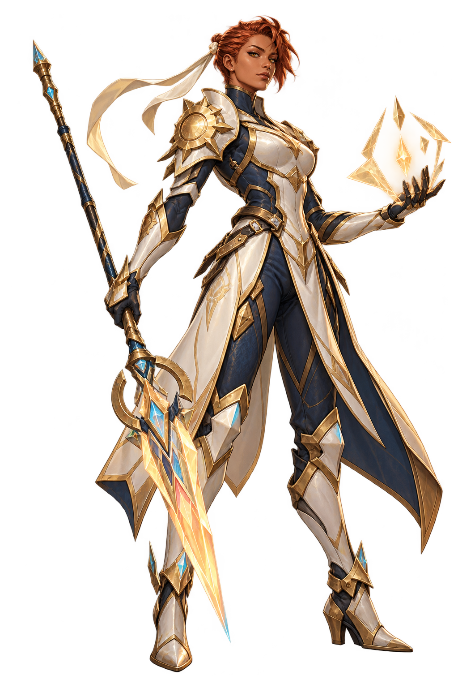

Solenne
The Sunforged Envoy
Protective duelist
Solenne's powers
BASTION / PRISM · 20 HP
- Dawn Shield
Give an allied unit Shield. Draw a card. - Mirrorstep
Move an allied unit to an empty allied lane. Give it +1 ATK this turn. - Silent Flash
Stun an enemy unit this turn. Draw a card. - Solar Accord · Signature · 1 energy
Give an allied unit Shield and +1/+1 permanently.
Play pattern: Protect a valuable unit, then move it away from unfavorable exchanges.
Counterplay: Hard removal and wide pressure punish investment in one unit.